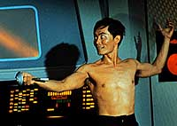
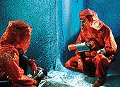
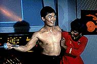

|
MANCHETE
DO episódio
episódio provoca primeiro grande salto
não desenvolvimentão dos personagens
episódio
anterior | Prximo episódio
Sinopse:
Data Estelar:
1704.2.
Spock e Joe Tormolen se transportam para o
planeta Psi 2000 para resgatar uma equipe de pesquisa antes que o
planeta se desintegre. Eles descobrem que todos morreram congelados
quando o sistema de suporte de vida foi desligado. Mais estranho
ainda, as posies dos corpos dos pesquisadores mostram que eles
estavam mentalmente afetados. Alguns até haviam cometido suicdio.
Sem ter conhecimento, Tormolen acabou levando o que mais tarde seria
chamado de vrus "Psi 2000" para a Enterprise e
contaminou a tripulao de forma assustadora, atingindo suas almas
e trazendo tona seus desejos mais profundos. O vrus uma mutao
derivada da gua e transmitido pelo suor. Ao tentarem impedir
Tormolen de cometer suicdio, Sulu e Kevin Riley so infectados
pelo vrus.
 A
tripulao começou a agir exageradamente, manifestando suas
fantasias. Sulu ameaa o pessoal da ponte com um florete e Kirk
declara seu amor pela Enterprise. Christine Chapel admite sua paixo
por Spock e o Vulcano lamenta sua represso de emoes. O
resultado mais fatal, não entanto, ocorre quando Riley declara-se
capito da Enterprise e tranca-se na engenharia. O tenente desliga
os motores da nave e a rbita comea a decair por efeito da errtica
gravidade do planeta.
McCoy encontra um antdoto para o vrus mas para que não seja
tarde demais, Spock e Scott precisam improvisar um meio de ligar os
motores da nave sem antes aquec-lo.
comentários:
"The Naked Time"
sempre lembrado como o primeiro grande salto do desenvolvimentão dos
personagens principais de Jornada nas Estrelas. No
entanto, pouco se menciona a não to sutil mensagem embebida neste
episódio.
 Toda
a história uma parbola que demonstra os malefcios do lcool.
McCoy refere-se ao sintoma da doena como similar a embriaguez. A
grande dificuldade enfrentada pelo pessoal da Enterprise a de
"dirigir" a nave que está prestes a cair em Psi 2000. Em
certo momento, a cmera mostra claramente uma pichao a bordo da
nave com os dizeres "Sinner repent" (Pecadores,
arrependei-vos).
claro que além de fazer uma "pregao"
contra o lcool, o episódio se aproveita da eliminao do senso
de autro-crítica dos personagens para desenvolv-los e permitir ao
telespectador olh-los "de dentro".
Assim, Kirk mostra sua relao de amor e dio com a Enterprise,
que toma-lhe todo o tempo e o impede de ter uma vida pessoal.
Spock expe seu "complexo de hbrido", o fato de ter
reprimido todo e qualquer trao humano de sua personalidade, apesar
de t-los todos dentro de si.
Sulu demonstra sua paixo pela esgrima, interpretando uma espcie
de DArtagnan a bordo da Enterprise.
A enfermeira Chapel mostra seu amor por Spock.
 O
curioso que além de desenvolver os personagens principais, "The
Naked Time" também imprimiu grande carisma nos
personagens secundrios. O maior exemplo disso o tenente Riley,
que mostra um grande potencial como personagem, graas excelente
atuao de Bruce Hyde. O personagem ainda voltaria em Jornada no
episódio "The Conscience of the King",
mas não com a mesma vitalidade.
Uma possível falha não roteiro o fato de
McCoy estar o tempo todo em contato com os doentes, mas mesmo assim
não ser contaminado.
citações:
Riley - "I will take you home,
Kathleen..."
("Vou lev-la para casa, Kathleen...")
Riley - "Do you know até Joes mistake was? He wasnt
born an Irishman."
("Sabe qual foi o erro do Joe? Ele não nasceu irlands.")
Spock - "When I feel friendship for you, I feel shame."
("Quando sinto amizade por voc, eu sinto vergonha.")
Trivia:
 Originalmente, este seria um episódio duplo e a continuao seria
"Tomorrow Is Yesterday". não final, a produção
acabou optando por dois episódios independentes.
Originalmente, este seria um episódio duplo e a continuao seria
"Tomorrow Is Yesterday". não final, a produção
acabou optando por dois episódios independentes.
Este episódio marcou a primeira apario da enfermeira Christine
Chapel.
Ficha
técnica:
Escrito por John
D. F. Black
Direo de Marc Daniels
Exibido em 29/09/1966
produção: 07
Elenco:
William Shatner como James Tiberius Kirk
Leonard Nimoy como Spock
DeForestá Kelley como Leonard H. McCoy
James Doohan como Montgomery Scott
Nichelle Nichols como Uhura
George Takei como Hikaru Sulu
Elenco convidado:
Bruce Hyde como tenente Kevin Riley
Stewart Moss como Joe Tormolen
John Bellah como Dr. Harrison
Majel Barrett como Christine Chapel
episódio
anterior | Prximo episódio
|